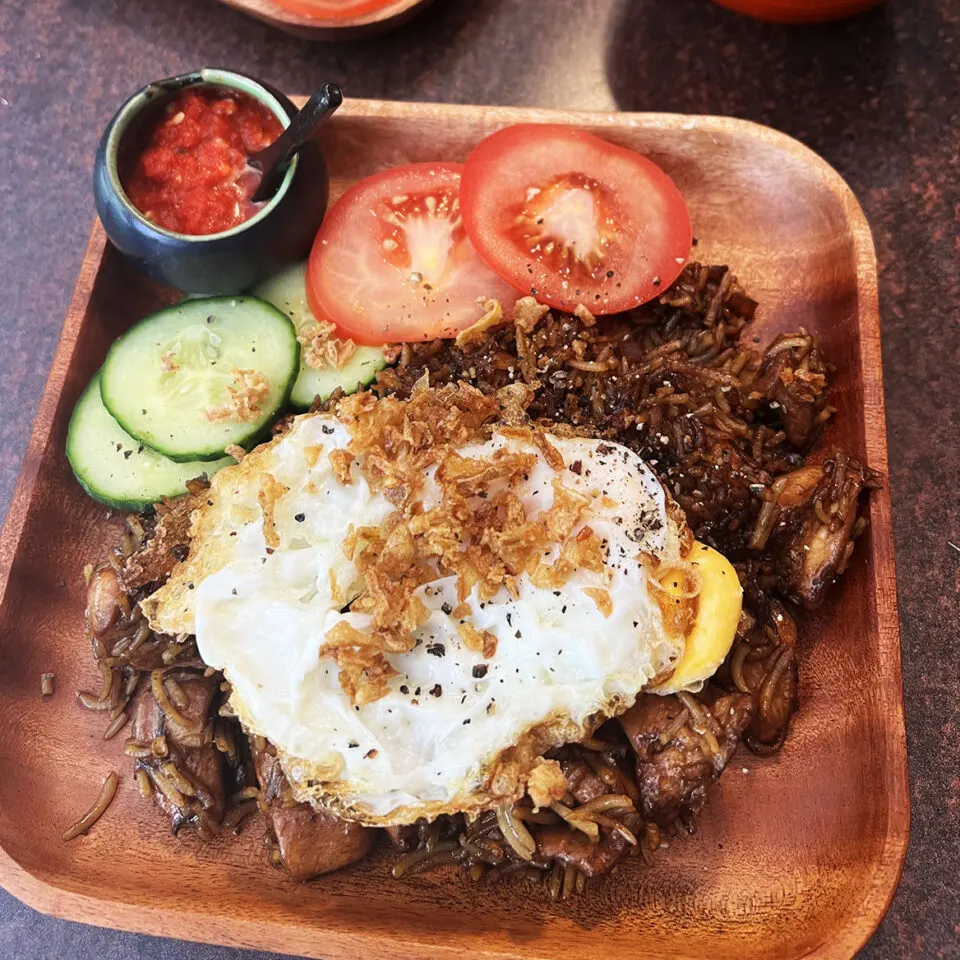
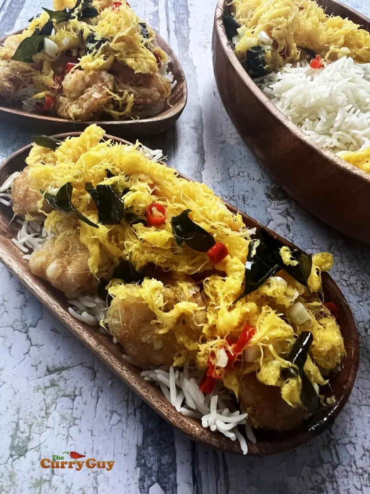

Food Recipes

Nasi Gorengk
Ingredients
For the Sambal Oelek
- 120g red bird’s eye or jalapeño chillies
- 1 tbsp rice wine vinegar
- 1 ½ tsp salt or to taste
For the Chicken
- 450g (1 lb) chicken thighs, cut into small bite sized pieces
- 1 tbsp kecap manis
- 1 tsp soy sauce
For the Rice
- 2 tbsp kecap manis
- 2 tbsp soy sauce
- 2 tbsp rapeseed (canola) or peanut oil (plus more if required)
- 4 shallots (or half red onion), finely chopped
- 4 garlic cloves, finely chopped
- 2 green bird’s eye chillies, finely chopped, (more or less to taste)
- ½ tsp shrimp paste
- 4 cups cooked, chilled Basmati or Jasmine rice
- ½ tsp white pepper or to taste
To Serve
- 1 English cucumber, sliced
- 4 medium tomatoes, quartered
- Sambal Oelek
- Crispy fried shallots or onions, homemade or shop bought is fine
- 4 eggs (optional)

Butter Egg Floss Prawns
Ingredients
- 12 jumbo prawns, trimmed, peeled and deveined
- 1 ½ tsp salt
- 4 tbsp cornflour (corn starch)
- 625ml (2 ½ cups) rapeseed (canola) oil
- 7 egg yolks, lightly beaten
- 150g (5.25oz) unsalted butter
- 5 red bird’s eye chillies, thinly sliced
- 5 cloves garlic, finely chopped
- 20 - 30 fresh or frozen curry leaves
- ½ tsp Chinese chicken stock granules (contains MSG, optional)